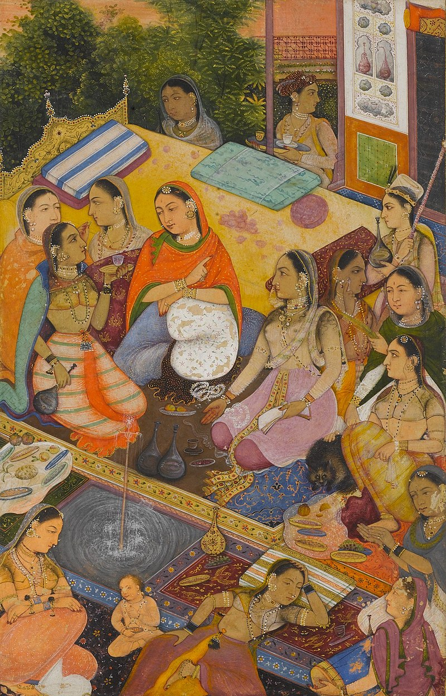

Women's history is the study of the role that women have played in history and the methods required to do so. It includes the study of the history of the growth of woman's rights throughout recorded history, personal achievements over a period of time, the examination of individual and groups of women of historical significance, and the effect that historical events have had on women. Inherent in the study of women's history is the belief that more traditional recordings of history have minimized or ignored the contributions of women to different fields and the effect that historical events had on women as a whole; in this respect, women's history is often a form of historical revisionism, seeking to challenge or expand the traditional historical consensus.  The main centers of scholarship have been the United States and Britain, where second-wave feminist historians, influenced by the new approaches promoted by social history, led the way. As activists in women's liberation, discussing and analyzing the oppression[citation needed] and inequalities they experienced as women, they believed it imperative to learn about the lives of their fore mothers—and found very little scholarship in print. History was written mainly by men and about men's activities in the public sphere, especially in Africa—war, politics, diplomacy and administration. Women were usually excluded and, when mentioned, were usually portrayed in sex stereotypical roles such as wives, mothers, daughters, and mistresses.[1] The study of history is value-laden in regard to what is considered historically "worthy."[2] Other aspects of this area of study are the differences in women's lives caused by race, economic status, social status, and various other aspects of society.[3] The study of women's history has evolved over time,[4] from early feminist movements that sought to reclaim the lost stories of women, to more recent scholarship that seeks to integrate women's experiences and perspectives into mainstream historical narratives. Women's history has also become an important part of interdisciplinary fields such as gender studies, women's studies, and feminist theory.[5][6] Some key moments in women's history include the suffrage movement, which fought for women's right to vote; the feminist movement of the 1960s and 1970s,[7] which brought attention to issues such as reproductive rights and workplace discrimination; and the #MeToo movement, which has drawn attention to the prevalence of sexual harassment and assault.[8][9] Notable women throughout history include political leaders such as Cleopatra, Joan of Arc, and Indira Gandhi;[10] writers such as Jane Austen, Virginia Woolf, and Toni Morrison;[11][12] activists such as Harriet Tubman, Susan B. Anthony, and Malala Yousafzai;[13][14] and scientists such as Marie Curie, Rosalind Franklin, and Ada Lovelace.[15][16] International Women's Day (IWD) is a holiday celebrated annually on March 8 as a focal point in the women's rights movement. IWD gives focus to issues such as gender equality, reproductive rights, and violence and abuse against women.[3][4] Spurred by the universal female suffrage movement, IWD originated from labor movements in North America and Europe during the early 20th century.[5][6][7] The earliest version reported was a "Women's Day" organized by the Socialist Party of America in New York City on February 28, 1909. This inspired German delegates at the 1910 International Socialist Women's Conference in Copenhagen to propose "a special Women's Day" be organized annually, albeit with no set date;[8] the following year saw the first demonstrations and commemorations of International Women's Day across Europe. After the Russian Revolution in 1917, IWD was made a national holiday on March 8;[9] it was subsequently celebrated on that date by the socialist movement and communist countries. The holiday became a mainstream global holiday following its promotion by the United Nations in 1977.[10] International Women's Day is a public holiday in several countries. The UN observes the holiday in connection with a particular issue, campaign, or theme in women's rights.[6]